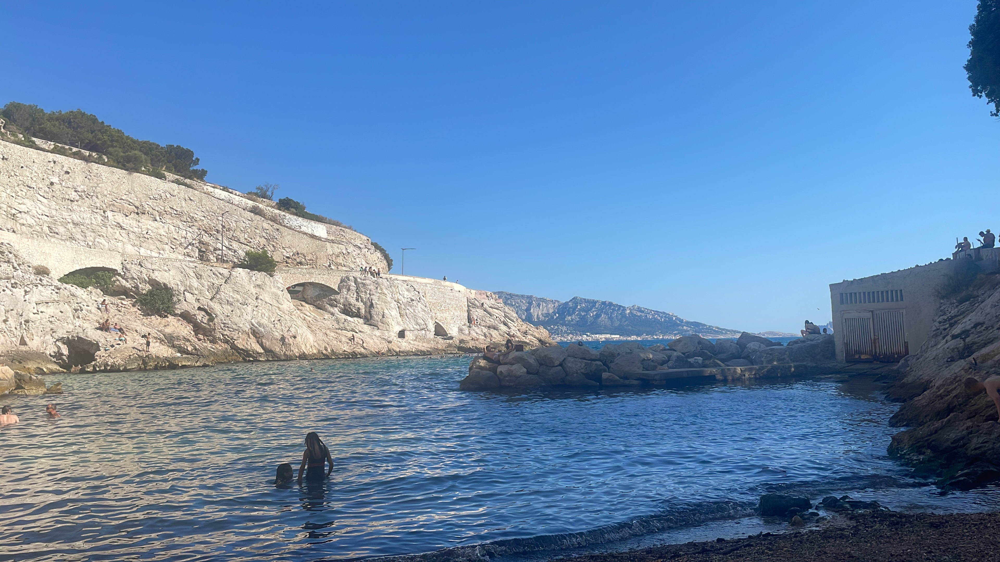
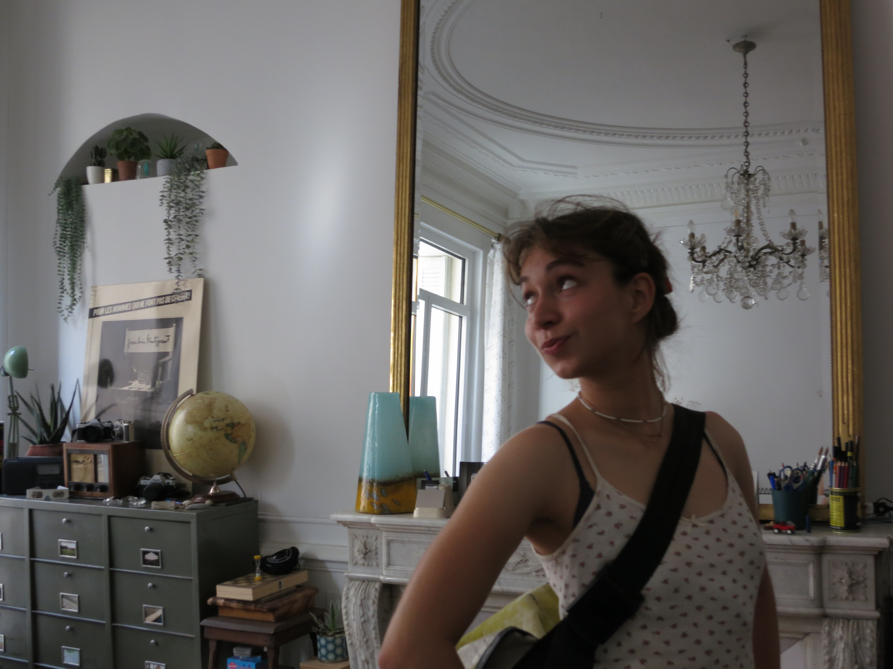
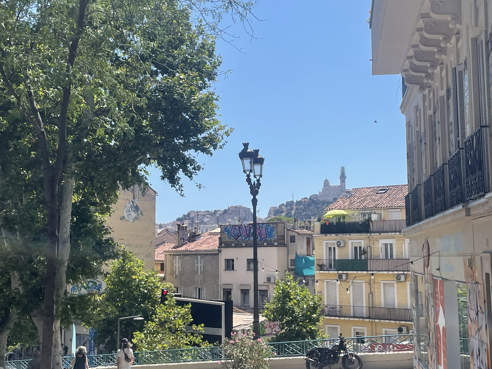
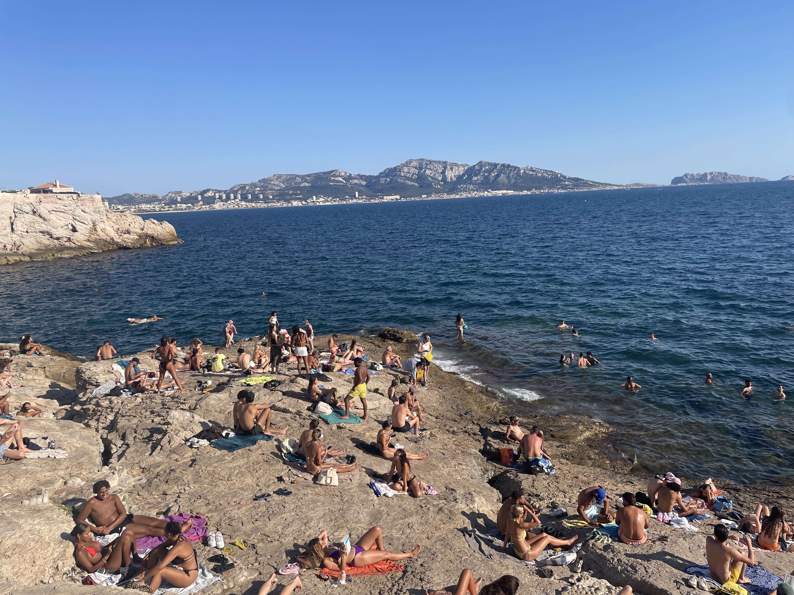
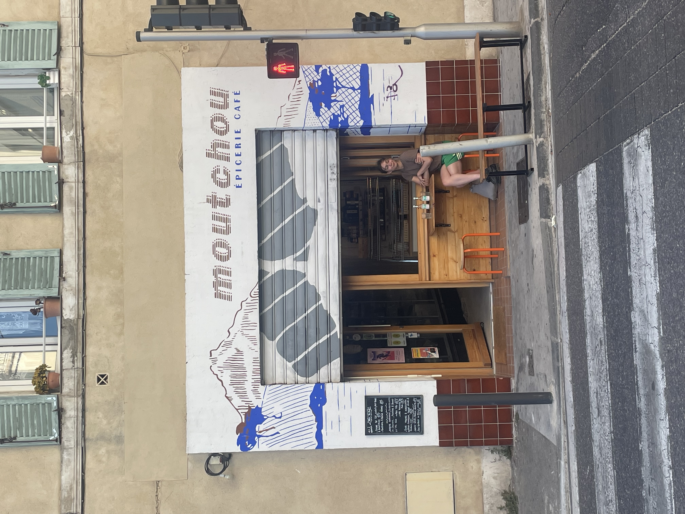
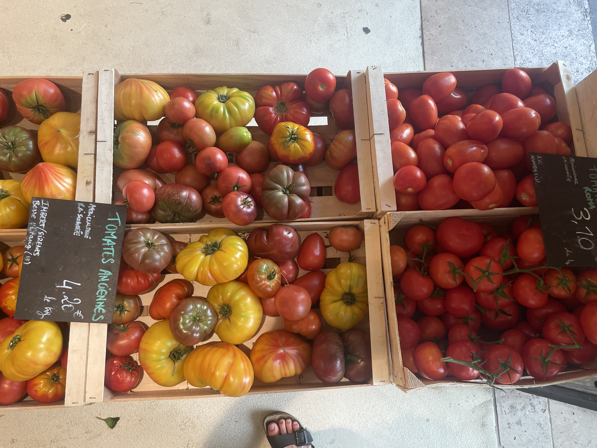

02 Juillet - 05 Juillet - Marseille
Marseille, la ville de la decadence ne m’a malheureusement pas vu danser sur un rooftop en bord de mer. Tout au contraire après notre première escapade au petit nice (plage de rochers super branchée) avec Josephine, me voilà insolé, fiévreux et en choc thermique - entre Copenhague et Marseille la différence de température était donc un peu trop élevée 🙈. Retour dans notre villa luxueuse et reste du séjour au lit, porridge et bouillon au menu. Brèves escapades à la brûlerie mocca, qui m'a servi des oeuf crus et au marché des argonautes, parfait pour nos achats les plus bobo.
      ← Retour